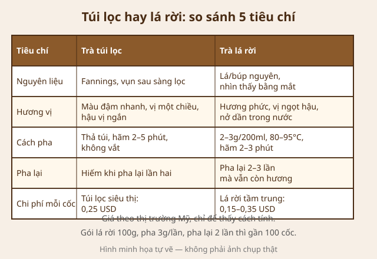

Trà túi lọc và trà lá rời: chọn loại nào cho từng lúc
Tác giả: Ruler
Bạn không cần quyết định ngay hôm nay xem túi lọc hay lá rời "tốt hơn". Bạn chỉ cần làm một phép thử kéo dài một tuần: giữ lại hộp túi lọc đang dùng, mua thêm một gói lá rời nhỏ có ghi rõ nguồn gốc, rồi pha hai loại cạnh nhau mỗi ngày. Cuối tuần, bạn sẽ biết mình hợp với loại nào — không phải vì một bài viết nói vậy, mà vì chính miệng mình đã nếm. Bài này bày cách thử đó, rồi mới giải thích vì sao hai loại cho ra hai ly khác nhau, tiền mỗi cốc tính ra sao, và pha thế nào cho đúng.
Trước khi mua: bạn uống trà lúc nào, ở đâu
Câu trả lời đúng bắt đầu từ lịch uống của bạn, không phải từ kệ hàng. Hãy trả lời ba câu hỏi ngắn trước khi bỏ tiền.
Thứ nhất, bạn uống trà vào lúc nào trong ngày? Sáng vội trước giờ đi làm khác hẳn tối ngồi chậm sau bữa cơm. Buổi sáng cần một cốc nóng trong vài phút, không dụng cụ lỉnh kỉnh. Buổi tối có thời gian chờ nước, chờ lá nở, và có thời gian ngồi uống hết một ấm nhỏ.
Thứ hai, bạn uống ở đâu? Ở nhà có bếp, có bình, có chỗ rửa. Ở văn phòng chỉ có một chiếc cốc và ấm siêu tốc. Đi công tác thì chỉ có nước nóng ở khách sạn. Mỗi chỗ hợp với một loại trà khác nhau, và không có loại nào hợp với mọi chỗ.
Thứ ba, bạn uống trà để làm gì? Có người chỉ cần một thứ ấm, không phải cà phê, để bắt đầu ngày mới. Có người muốn biết rõ mình đang uống gì mỗi ngày, và sẵn sàng bỏ thêm một, hai phút để kiểm soát được điều đó. Hai nhu cầu này không cao thấp hơn nhau — chúng chỉ dẫn tới hai lựa chọn khác nhau.
Nếu ba câu trả lời của bạn đều nghiêng về nhanh, gọn, ít đồ đạc, túi lọc là lựa chọn hợp lý cho phần lớn các buổi trà của bạn. Nếu bạn có ít nhất một buổi mỗi ngày ngồi uống chậm, lá rời đáng để thử. Nhiều người uống trà lâu năm giữ cả hai: túi lọc cho sáng vội và lúc đi xa, lá rời cho buổi tối ngồi chậm. Bài này viết cho người đó — người muốn có cả hai, nhưng muốn biết rõ từng loại đang cho mình cái gì.
Cách thử trong một tuần
Đừng mua cả một bộ ấm mới rồi mới thử. Một phép thử gọn chỉ cần ba thứ: hộp túi lọc bạn đang dùng, một gói lá rời nhỏ, và một cuốn sổ hoặc một ghi chú trong điện thoại.
Chọn gói lá rời như sau: loại trà bạn đã quen vị — ví dụ hồng trà hoặc bạch trà, vì hai loại này vị nhẹ, ít đắng, dễ uống với người mới. Gói phải ghi rõ nơi trồng, vụ hái và cách chế biến. Nếu nhãn chỉ ghi vài chữ chung chung như "trà sạch" hay "trà tự nhiên" mà không có thêm thông tin gì, hãy chọn gói khác. Giá không phải tiêu chí chọn ở đây; một gói nhỏ đủ pha một tuần là đủ.
Pha thử mỗi ngày một cốc lá rời, cạnh một cốc túi lọc cùng loại trà nếu có thể. Uống túi lọc trước hay lá rời trước không quan trọng, miễn là hai cốc pha cùng một buổi, cùng một loại nước. Sau mỗi buổi, ghi ba dòng ngắn: cốc nào thơm hơn, cốc nào uống hết mà không thấy chán, và cốc nào bạn muốn pha lại ngày mai. Ba dòng đó quan trọng hơn mọi bảng so sánh, vì chúng ghi lại khẩu vị của chính bạn, không phải khẩu vị của người viết bài.
Cuối tuần, đọc lại bảy lần ghi. Nếu lá rời thắng ở cả ba dòng trong phần lớn các ngày, bạn đã có lý do để đổi. Nếu túi lọc thắng vào những sáng vội nhưng thua vào buổi tối ngồi chậm, bạn đã có lý do để giữ cả hai và dùng mỗi loại đúng lúc của nó. Nếu sau một tuần bạn vẫn không phân biệt được hai ly, túi lọc đang làm tốt nhiệm vụ của nó với bạn — không cần đổi chỉ vì người khác bảo lá rời ngon hơn.
Tiền tính theo cốc, không tính theo gói
Nhìn giá ghi trên bao bì, túi lọc thường rẻ hơn lá rời. Nhưng giá gói không phải giá mỗi cốc. Cách tính đúng là chia giá gói cho số cốc uống được, rồi cộng thêm số lần pha lại.
Lá rời có một lợi thế mà giá gói không thể hiện: một mẻ lá tốt thường pha lại được 2–3 lần mà vẫn còn hương. Túi lọc thì hiếm khi pha lại lần hai. Vì vậy một gói lá rời đắt hơn chưa chắc đã tốn hơn mỗi cốc.
Bạn có thể tự tính với trà ở Việt Nam theo cùng cách này. Ví dụ: một gói lá rời 100g, mỗi lần pha 3g, pha được khoảng 33 lần. Mỗi lần pha lại thêm 2 lần nữa thì thành gần 100 cốc. Một hộp túi lọc 20 túi thì đúng 20 cốc, không hơn. Lấy giá gói chia cho số cốc đó, bạn sẽ có giá mỗi cốc của từng loại — con số này mới là thứ đáng so sánh, không phải giá ghi trên bao bì.
Một lưu ý khi tính: đừng so sánh túi lọc rẻ nhất với lá rời đắt nhất. So sánh hai loại ở cùng một mức chất lượng mà bạn thực sự uống. Túi lọc cao cấp đựng lá nguyên trong túi kim tự tháp rộng có giá mỗi cốc cao hơn túi lọc siêu thị nhiều, và lá rời tầm trung có giá mỗi cốc thấp hơn nhiều người tưởng khi tính cả lần pha lại. Bài này không đưa bảng giá của thị trường Mỹ ra làm giá ở Việt Nam — giá ở đây khác, chỉ cách tính theo cốc là dùng được.
Nhìn vào lá: vụn và lá nguyên khác nhau ở đâu
Bóc một túi lọc thường ra, bạn sẽ thấy bên trong gần như không có lá nguyên nào — chỉ toàn vụn nhỏ. Trong nghề, vụn nhỏ sau sàng lọc gọi là fannings, vụn mịn hơn nữa gọi là dust. Phần lớn trà túi lọc đại trà đựng hai loại vụn này, vì chúng rẻ hơn lá nguyên, đóng gói nhanh hơn, và pha ra màu cũng nhanh hơn. Đó là lựa chọn hợp lý về chi phí trong sản xuất công nghiệp, không phải chiêu lừa người uống — người mua chỉ cần biết mình đang uống loại nào để khỏi kỳ vọng sai.
Điểm mạnh của vụn nhỏ cũng chính là điểm yếu của nó. Nước vừa chạm vào đã lên màu, nhưng tinh dầu thơm cũng theo đó mà thoát ra ồ ạt rồi biến mất — nhất là khi trà đã xay nhỏ và nằm trong bao bì từ lâu trước khi đến tay bạn. Vụn có diện tích tiếp xúc với nước rất lớn nên chiết nhanh, và cũng vì thế mà hương không giữ được lâu. Ly trà làm ra có màu, có vị chát, nhưng hương chỉ còn một lớp mỏng.
Lá nguyên thì ngược lại. Bạn mở gói ra và nhìn thấy lá còn nguyên hình, búp còn nguyên búp. Lá giữ được tinh dầu lâu hơn vì ít bề mặt tiếp xúc với không khí. Khi gặp nước nóng, lá nở dần ra, hương thoát ra theo từng lớp chứ không ồ ạt một lúc. Nhìn bằng mắt thường như vậy là cách đơn giản nhất để kiểm tra nguyên liệu trước khi pha — không cần dụng cụ gì, chỉ cần mở gói ra nhìn.
Không phải túi lọc nào cũng đựng vụn. Một số túi lọc cao cấp dạng kim tự tháp rộng đựng lá nguyên bên trong. Nếu bạn thích sự tiện của túi lọc nhưng muốn lá tốt hơn, đó là loại nên tìm — theo LoveLoveTea, túi kim tự tháp rộng đựng lá nguyên chính là dấu hiệu nhận biết loại túi lọc này.
Hương vị khác nhau ra sao qua từng lần nước
Sự khác biệt giữa hai loại thể hiện rõ nhất khi bạn nếm qua từng lần nước, không phải khi bạn đọc mô tả trên bao bì.
Nước đầu tiên, túi lọc lên màu ngay và hương đã rõ — nhưng hương đó thường chỉ có một nốt, và hậu vị ngắn. Lá rời ở nước đầu còn đang mở dần: lá chưa nở hết, hương chưa bung hết, ly có thể nhạt hơn bạn tưởng. Đừng kết luận ở nước này.
Nước thứ hai là lúc hai loại tách ra rõ nhất. Túi lọc ở nước hai đã nhạt hẳn, thường không pha lại nữa. Lá rời ở nước hai vẫn còn hương, nhiều khi còn ngon hơn nước đầu vì lá đã nở hết và hương thoát ra đều hơn.
Nước thứ ba, túi lọc gần như không còn gì để pha. Lá rời chất lượng vẫn còn hương, và đó là lý do một mẻ lá pha được nhiều cốc hơn một túi lọc.
Uống chậm một cốc lá rời, bạn sẽ thấy ly đổi dần theo thời gian: lúc đầu hương còn e dè, rồi rõ dần khi lá mở ra, vị ngọt ở lại sau khi nuốt khá lâu. Uống một cốc túi lọc thì ngược lại: mọi thứ đến ngay từ ngụm đầu — màu đậm, vị rõ — rồi nhạt dần rất nhanh, nuốt xong không còn gì đọng lại. Đây là xu hướng chung khi so hai loại ở cùng một mức giá — không phải quy luật cho từng gói cụ thể. Một túi lọc cao cấp đựng lá nguyên vẫn có thể ngon hơn một gói lá rời rẻ tiền, và ngược lại.

Hình minh họa tự vẽ — không phải ảnh chụp thật.
Pha cho đúng từng loại
Pha sai thì loại nào cũng dở. Hai loại có cách pha khác nhau, và lỗi hay gặp nhất của người mới là pha lá rời bằng thói quen pha túi lọc.
Với túi lọc, cách pha là: bỏ túi vào cốc, hãm 2–5 phút rồi lấy túi ra, không vắt. Vắt túi sẽ ép ra vị đắng, theo LoveLoveTea. Không cần dụng cụ gì thêm, chỉ cần một chiếc cốc và nước nóng.
Với lá rời, cứ 200ml nước thì cho khoảng 2–3g trà để bắt đầu. Về nhiệt độ, khoảng 80–95°C là khung chung; trong khung đó, trà xanh và bạch trà nên pha bằng nước chưa thật sôi, còn hồng trà với trà đen thì dùng nước gần sôi hẳn. LoveLoveTea ghi tỉ lệ tương đương theo đơn vị của họ: 1 thìa cà phê (2,5g) cho mỗi 8 oz nước (khoảng 237ml), tức cũng khoảng 2–3g cho một cốc. Pha chừng 2–3 phút rồi rút lưới ra đúng lúc, đừng ngâm quá lâu. Trước khi pha, làm nóng bình hoặc lưới lọc bằng nước nóng; pha xong thì nhấc lưới ra hẳn.
Ly lá rời đầu tiên của nhiều người đắng gắt, và họ kết luận ngay là lá rời không hợp khẩu vị. Thường không phải lá có vấn đề, mà là thói quen pha túi lọc được mang sang nguyên vẹn: cho nhiều trà, rồi chế nước sôi 100°C vào. Quá nhiều trà cộng với nước quá nóng cùng lúc thì ly nào cũng đắng. Cách sửa là giảm lượng trà về 2–3g, hạ nhiệt độ xuống trong khung 80–95°C, và bắt đầu với một chiếc bình thủy tinh có sẵn lưới lọc rời. Chỉ vậy là đủ dùng — chưa cần tới bộ ấm tử sa.
Dụng cụ tối thiểu để bắt đầu gồm ba món: một bình hoặc cốc có lưới lọc rời, một chiếc cân nhỏ hoặc thìa đong để biết mình dùng bao nhiêu gam, và một hộp kín để đựng trà khô. Bình lưới lọc rời có giá không cao, rửa nhanh, và dùng được cho cả trà xanh, hồng trà lẫn trà ướp hoa. Khi đã quen tay, bạn có thể chuyển sang ấm nhỏ hoặc chén khải để pha nhiều nước, nhưng đó là bước sau, không phải bước đầu.
Xét về thời gian, lá rời pha bằng bình lọc sẵn cũng nhanh gần bằng túi lọc. Đun nước, bỏ trà vào lưới, đợi 2 phút rồi rút lưới ra là xong. So với thả túi vào cốc, lá rời chỉ tốn thêm khoảng 30 giây chuẩn bị và dọn dẹp, theo LoveLoveTea.
Vật liệu túi, bảo quản và rác
Túi lọc chạm nước sôi mỗi ngày, nên câu đầu tiên khi chọn một hộp túi lọc không phải là hãng nào, mà là túi làm bằng gì. Giấy lọc và vải bông là hai chất liệu quen thuộc; túi kim tự tháp thường làm bằng nylon tổng hợp. Về việc vật liệu tổng hợp có thôi thứ gì ra nước sôi hay không, giới khoa học vẫn chưa thống nhất — có ý kiến đặt câu hỏi, chưa có kết luận dứt khoát cho mọi loại túi. Bài này không trả lời thay bạn; chỉ có một thói quen đáng giữ nếu bạn uống trà mỗi ngày: lật gói lại, đọc dòng ghi chất liệu trước khi trả tiền.
LoveLoveTea nói cụ thể hơn: nhiều túi ghi là "lụa" thực ra làm từ nylon hoặc nhựa sinh học từ ngô, và một số nghiên cứu đã thấy túi nylon giải phóng vi hạt nhựa trong nước sôi. Bài này không kết luận về mức độ rủi ro, vì đó là câu hỏi cần nghiên cứu chuyên môn; chỉ ghi lại hai điểm thực hành mà cả hai nguồn đều đồng ý: chọn túi lọc ghi rõ "không nhựa" (plastic-free) nếu bạn quan tâm tới vật liệu, và đừng để túi ngâm quá lâu trong nước sôi.
Chỗ để trà trong bếp quyết định trà giữ hương được bao lâu, chứ không phải loại trà bạn mua. Hộp đựng phải kín hơi, chắn sáng, để nơi mát và khô — hai loại đều cần như vậy, nhưng túi lọc đựng trong hộp carton thường xuống hương nhanh hơn lá rời đựng trong hộp thiếc kín. Cất đúng cách thì lá rời giữ được lâu gấp khoảng 2 lần túi lọc, theo LoveLoveTea. Dù dùng loại nào, cũng nên tránh để trà gần bếp và gia vị, vì trà khô hút mùi rất nhanh.
Về rác thải, lá rời cũng gọn hơn: không thêm bao bì cho từng cốc, không túi lót nhựa, không ghim, dây hay nhãn; lá ướt sau khi pha bỏ vào thùng ủ được. Nếu bạn vẫn dùng túi lọc thì chọn hãng ghi rõ "không nhựa" (plastic-free).
Năm 1908, một thương gia ở New York gửi mẫu trà đựng trong túi lụa nhỏ; khách nhận được thả luôn cả túi vào nước nóng — thế là túi lọc ra đời, hoàn toàn tình cờ. Hơn một thế kỷ đã qua mà câu hỏi "loại nào hơn" vẫn chưa có đáp án chung. Với người uống hằng ngày, đáp án nằm ở từng lúc dùng, không nằm ở lý thuyết. Túi lọc không phải lựa chọn tồi — nó chỉ đúng chỗ. Những buổi sáng chỉ có vài phút trước giờ làm, những chuyến đi chỉ có ấm siêu tốc trong phòng khách sạn, những lúc bạn cần một cốc nóng để tỉnh táo mà không muốn bày dụng cụ ra — đó là lúc túi lọc làm đúng việc của nó. Ở những lúc đó, tốc độ đáng giá hơn việc nếm từng lớp hương.
Đọc nhãn, kiểm tra lá khô
Chuyển sang lá rời mà chọn sai gói thì ly trà cũng chẳng khá hơn túi lọc là bao — nên biết đọc nhãn trước khi bỏ tiền mua trà. Gói tốt hay gói qua loa, nhìn vào nhãn là biết ngay — nhưng phải nhìn đúng chỗ. Một nhãn chỉ in vài chữ chung chung như "trà sạch" hay "trà tự nhiên" rồi thôi thì chưa đủ để tin; đó là lúc nên hỏi thêm người bán, hoặc chọn gói khác. Nhãn đáng tiền in đủ bốn thứ, theo thứ tự bạn kiểm tra từ dễ tới khó: cách chế biến (lá được làm ra sao), vụ hoặc năm hái (hái lúc nào), vùng trồng tới tận huyện (trồng ở đâu), và độ cao nếu có. Đủ bốn mục thì gói đó ít nhất cũng minh bạch về nguồn gốc; thiếu thì đừng vội trả tiền.
Kiểm tra lá khô thì nhìn và ngửi là đủ: màu sắc có đồng đều không, có lẫn cành to không, mùi thơm có nhẹ và tự nhiên không, có mùi lạ không. Nhìn và ngửi chưa đủ thì còn một cách thử nữa, cho trường hợp bạn muốn chắc chắn trước khi mua nhiều: thả vài lá khô vào cốc nước lạnh và ngồi chờ. Lá tốt nhả màu chậm — nước chỉ nhạt dần theo thời gian, lá mở ra từ từ. Lá kém thì khác: vừa chạm nước, màu đã loang ra đậm ngay, đậm tới mức nhìn là thấy không tự nhiên. Gặp dấu hiệu đó thì đừng mua tiếp gói đó. Với trà hoa sấy lạnh, chẳng hạn cúc chi hay hoa hồng, cách kiểm tra lại khác: cánh hoa còn giữ màu gần như lúc tươi, hương dịu và trong thì tốt; hương xộc lên nồng gắt một cách khác thường thì nhiều khả năng người làm đã cho thêm hương liệu từ bên ngoài vào.
Người mới làm quen với lá rời nên bắt đầu từ loại mình đã uống quen — hồng trà hay bạch trà Shan Tuyết đều được, vì hai loại này cho ly nhẹ và ít đắng, người mới pha cũng khó hỏng ngay từ lần đầu. Không cần bỏ túi lọc ngay: mua một gói lá rời rõ nguồn gốc, pha thử rồi đặt cạnh hộp túi lọc đang dùng, nếm bằng khẩu vị của chính mình. Sau một tuần pha hai loại cạnh nhau, bạn sẽ tự thấy mình cần cả hai hay chỉ cần một — buổi nào vội thì túi lọc vẫn là lựa chọn đúng, buổi nào rảnh thì lá rời cho bạn nhiều hơn, và đó là đáp án của riêng bạn chứ không phải của bài viết này. Cũng có những loại trà hợp với túi lọc hơn lá rời: bất cứ loại nào bạn uống chủ yếu vì tiện chứ không vì thưởng thức, các loại trà pha sẵn của siêu thị mà bạn đã quen vị, và trà rooibos — vụn mịn của nó pha túi vẫn ngon. Ngược lại, trà xanh, hồng trà, bạch trà và các loại trà ướp hoa nên bắt đầu bằng lá rời, vì ở những loại này sự khác biệt giữa lá nguyên và vụn trà thể hiện rõ nhất.
Kết luận
Sau một tuần thử, bạn sẽ có câu trả lời của riêng mình — và câu trả lời đó có thể không giống câu trả lời của người khác. Sáng nào cũng vội thì túi lọc là bạn đồng hành hợp lý cho buổi sáng đó. Tối nào cũng có mười phút ngồi chậm thì lá rời xứng đáng có một chỗ trên kệ. Càng uống trà thường xuyên và càng để ý tới nguyên liệu mình đang uống, bạn càng thấy lá rời cho mình nhiều quyền kiểm soát hơn: nhìn thấy lá, tự chỉnh lượng trà 2–3g cho 200ml nước, tự chọn nhiệt độ 80–95°C và thời gian 2–3 phút, pha lại được 2–3 lần. Túi lọc thì cho bạn tốc độ: thả vào cốc, hãm 2–5 phút, không cần dụng cụ, không cần cân đong. Tính theo mỗi cốc thì lá rời không đắt như giá gói gợi ý, vì pha lại được nhiều lần. Cách dùng hợp lý nhất cho người uống trà mỗi ngày là có cả hai, mỗi loại dùng đúng lúc của nó. Muốn bắt đầu, hãy mua một loại lá rời rõ nguồn gốc, pha thử rồi uống cạnh hộp túi lọc đang dùng, và để khẩu vị của chính mình quyết định.
Nguồn tham khảo
- Tôi Yêu Trà, "Trà Túi Lọc và Trà Lá Rời: Cái Nào Thật Sự Tốt Hơn?" — fannings/broken là phần vụn sau sàng lọc; bảng so sánh 5 tiêu chí; lượng trà 2–3g/200ml, nhiệt độ 80–95°C, thời gian 2–3 phút; pha lại 2–3 lần; đọc nhãn cần ghi tỉnh, huyện, độ cao, vụ hái, phương pháp chế biến; thử lá trong nước lạnh (truy cập 24/11/2026): https://toiyeutra.vn/blogs/tin-tuc/tra-tui-loc-va-tra-la-roi-cai-nao-that-su-tot-hon
- LoveLoveTea, "Tea Bags vs Loose Leaf: Which Is Better?" — túi trà ra đời tình cờ năm 1908; túi lọc chứa fannings và dust; lá rời giữ tinh dầu; 1 thìa cà phê (2,5g) cho 8 oz nước; túi lọc hãm 2–5 phút, không vắt; lá rời pha lại 2–3 lần; bảo quản đúng cách thì lá rời giữ được lâu gấp khoảng 2 lần (truy cập 24/11/2026): https://lovelovetea.com/article/tea-bags-vs-loose-leaf